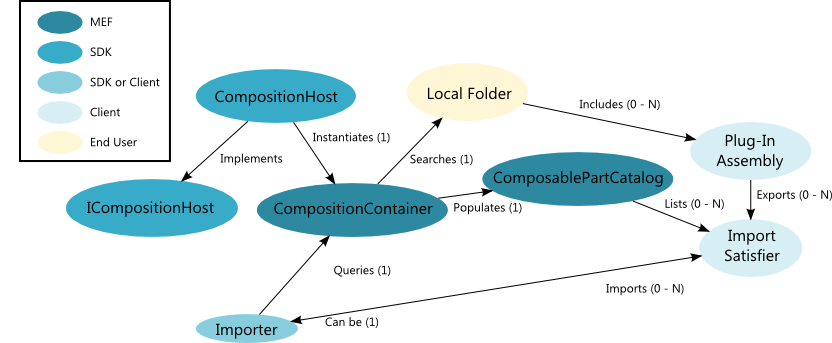

The Plug-in System
The Diagram SDK plug-in system, which is based on the .NET Managed Extensibility Framework (MEF), provides a unified system for extending your application by importing UI and modeling components housed in separate assemblies. Refer to the PlatformFramework Plugin Contracts document for a list of importing types, imported types, and assciated metadata types.
Plug-In System Architecture
The following diagram illustrates the high-level architecture of the plug-in system.

Plug-in System Theory of Operation
When the end user launches a shell application, the shell instantiates a CompositionHost. The CompositionHost populates its CompositionContainer by searching the local folder from which the application instance was launched, looking at each assembly for classes declared as exports. These exported classes can then be used as import satisfiers for importer classes.
An importer is a class that uses an import declaration to designate a contract for exporters to meet. External assemblies can then declare exports that satisfy those contracts and thus plug into the importer. For example, the shell's ribbon is an importer designed to consume plug-ins that export an IDocumentType so that it can display launch buttons for each available document type. Other examples of extensibility points in the Diagram SDK include DocumentEditControls, Commands, Adorners, Rules, IModels, Parsers and Generators, among many others. Refer to the PlatformFramework Plugin Contracts document for a list of importing types, imported types, and assciated metadata types.
Using the Plug-In System
The basic usage of the Diagram SDK plug-in system involves creating a CompositionHost, usually as a stack variable or a class member. The CompositionHost implements the ICompositionHost interface, which provides a property to access the CompositionContainer. The CompositionContainer is the MEF component that manages exported plug-in types and instances. Once the CompositionHost is created, you can access the CompositionContainer member and instance top-level items such as a SourceFile or StudioWindow, as shown in the following example.
using (CompositionHost host = CompositionHost.InitializeNew(null))
{
myApp.ShutdownMode = ShutdownMode.OnExplicitShutdown;
StudioWindow mainWnd = host.CreateInstance();
myApp.Run(mainWnd);
}
Avoiding Statics
Avoid creating static objects that reference the Host or CompositionContainer. The Diagram SDK allows the end user to open multiple instances of the core framework in the same AppDomain. Statics are incompatible with this feature, because statics would be shared by all instances of the system in the AppDomain. You can use singletons, but they should be exposed through MEF rather than through class statics.
All top-level entities in the Diagram SDK include a property that returns the CompositionHost they are associated with. By convention, this property is called Host. UI Elements can access the CompositionHost through the DocumentEditSite.Host property. The DocumentEditSite is available to all UI elements using the static method DocumentEditSite.GetEditSite.
In the modeling layer, the Host is available through the following classes:
Exporting Types
To expose your type as a plug-in, you must declare the class as an export. You can do so using the standard MEF [Export] and [ExportMetadata] attributes, but creating custom export attributes can improve both type safety and ease of use. For example, you can turn an export like this:
[Export(typeof(IProjectServiceInitialization)]
[ExportMetadata("ProvidedInterface", "NationalInstruments.SourceModel.Projects.IInitializeProjectItem")]
[ExportMetadata("BindsToModelDefinitionType", "ReadonlySketch")]
public class ReadonlySketchFactory
{
}
Into this:
[ExportProjectServiceFactory("NationalInstruments.SourceModel.Projects.IInitializeProjectItem")]
[BindsToModelDefinitionType("ReadonlySketch")]
public class ReadonlySketchFactory
{
}
Accessing Exported Types as Import Satisfiers
If your type is exposed through the CompositionContainer as explained in the next section, you can gain access to the ICompositionHost by importing it as follows:
[Import]
ICompositionHost Host { get; set; }
Once you have access to an ICompositionHost interface, you can can access system singletons or create instances of top-level entities, such as SourceFiles. To obtain a reference to a singleton, you can use the GetExportedObject<>() method on the CompositionContainer:
Host.CompositionContainer.GetExportedObject();
This call will return the reference to the DocumentManager. To create instances of top-level entities, you can use the CreateInstance extension method:
Host.CreateInstance();
This will create a new SourceFile ready for use.
Using CreateInstance
It is important to understand when to use CreateInstance versus the New operator to create an object. In general, only top-level objects require CreateInstance. If the declaration of a type is marked with the [Export] attribute or if the class uses [Import] properties, then you need to use CreateInstance. When in doubt, you can always use CreateInstance t a non-exported type, and it will be created and its imports will be satisfied.
Using the Plug-In System in Automated Tests
Test methods should create a CompositionHost instance for each test. Failing to create a CompositionHost prevents the system from finding any plug-ins.